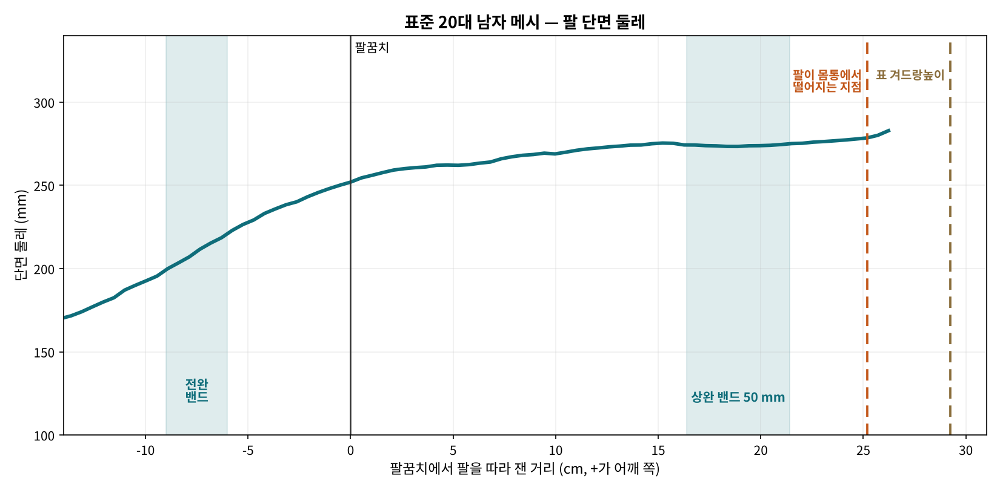
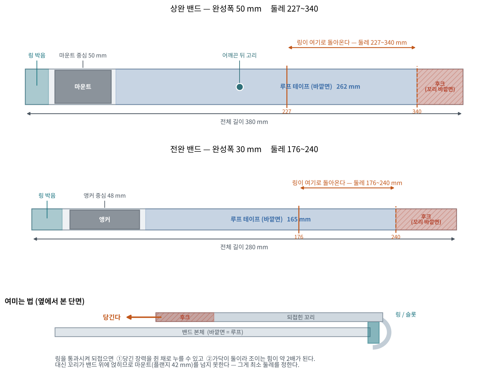
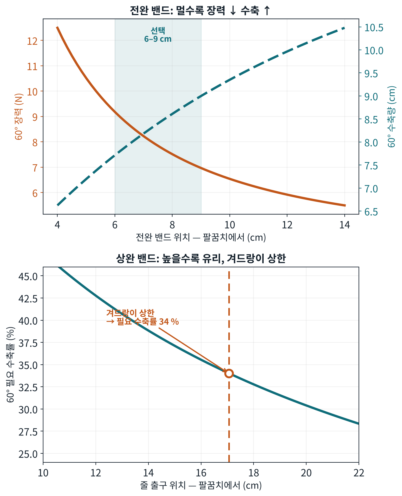

Introduction
- 퇴원 후 가정 재활에 쓰이는 팔꿈치 보조기기는 충분한 보조력과 함께 착용 불편이 적고 혼자 착용할 수 있어야 함.
- 그러나 기존 강체 외골격은 기계 관절축을 팔꿈치 축에 정렬해야 하고, 무게와 구조적 복잡성으로 착용 부담이 큼. TSA 기반 소프트 슈트 연구는 있으나 인체치수·패턴·착용성을 고려한 설계 근거는 부족함. [선행연구 인용]
- 따라서 본 연구는 관절축 정렬이 필요 없는 꼬임줄 구동기(Twisted String Actuator, TSA)를 이용하여, 인체치수와 착용 편의성을 고려한 팔꿈치 굴곡 보조기기를 설계하고 착용성을 평가하고자 함.
Method
- 사이즈코리아(Size Korea) 20~24세 남성 평균 3차원 인체 형상에서 팔꿈치 기준 팔 단면 둘레를 추출함.
- JavaScript 시뮬레이터를 개발하여 굴곡각별 장력·수축량·토크·회전수를 계산하고, 밴드 위치와 허브 직경을 결정함.

- 3차원 인체 형상을 바탕으로 YUKA CAD의 맞춤(MTM) 패턴 기능을 활용해 팔 곡면에 맞는 밴드 패턴을 제작함. [절차 확인]
- 네오프렌 밴드에 되접기 여밈을 적용하여 한 손으로 당긴 채 고정할 수 있게 함.

- 모터 마운트·줄 허브·전완 앵커·방향전환 부품 5종을 3D 프린팅하여 바느질 구멍으로 밴드에 고정함.
- 상완 밴드에 모터, 3D 프린팅 줄 허브, 마이크로컨트롤러, 모터 드라이버, 배터리를 통합하고, 줄로 상완·전완 밴드를 연결함. 어깨끈으로 흘러내림을 방지함.
- 상완·전완 밴드에 IMU 센서를 각각 부착하여 팔의 움직임을 감지함.
- AD0 핀으로 I2C 주소를 달리하여(0x68/0x69) 두 센서를 하나의 버스로 통신함.

- TSA는 두 가닥의 줄을 꼬아 길이를 줄여 팔꿈치 굴곡을 보조함.
L² = p² + (r·θ)²
L: 직선거리, p: 줄 길이, r: 축–줄 반지름(2 mm), θ: 꼬임각
1. 팔 움직임 감지
- 상완·전완의 IMU가 팔의 움직임을 감지
- 두 센서의 기울기 차이로 팔꿈치 굴곡각을 실시간으로 연산
- 착용 직후 팔을 편 자세로 영점 설정
2. 보조 장력 계산
- 자세 기반 중력보상: 전완 무게의 설정 비율(기본 50 %)만큼 필요한 장력을 계산
- 착용자의 의도는 추정하지 않음
3. 줄 꼬임 구동
- 토크 제어로 모터가 줄을 꼬아 장력을 생성 → 착용자가 항상 이길 수 있음
- 꼬임 16회전 상한, 110° 이상 감기 금지, 통신 끊김 시 정지
- 시연용 수동 모드: 스마트폰 Wi-Fi 화면으로 속도 조작
Results
- 전완 밴드를 팔꿈치에서 멀리 둘수록 장력은 감소하나 수축량은 증가함.
- 상완 밴드를 멀리 둘수록 줄이 길어져 필요 수축률이 감소함.
- 따라서 상완 밴드는 겨드랑이까지의 거리(23.6 cm) 안에서 최대한 멀리, 전완 밴드는 팔꿈치에서 6~9 cm에 배치함.

- 결정한 밴드 위치에서 팔꿈치 60° 굴곡에 필요한 값을 산출함.
| 항목 | 값 |
|---|---|
| 필요 수축량 | 8.3 cm |
| 필요 장력 | 14 N |
| 줄 허브 직경 | 4 mm 이상 |
- 모터의 토크와 회전수 조건을 고려하여 허브 직경을 4 mm 이상으로 선정함.
- 20대 남성 10명을 대상으로 5점 리커트 척도로 착용 만족도를 주관적으로 평가함.
| 영역 | 문항 | 평균 |
|---|---|---|
| 착용 과정 | 혼자 착용, 착탈 시간, 길이 적합 | - |
| 고정 상태 | 상완·전완 밴드, 어깨끈 | - |
| 압박과 자극 | 조임 통증, 눌림·쓸림, 저림 | - |
| 무게와 동작 | 무게 부담, 동작 방해 | - |
| 수용도 | 가정 착용 거부감, 전반 만족 | - |
- 모든 평가 항목의 평균이 3.0 이상으로, 착용 만족도가 전반적으로 긍정적으로 나타남.
Conclusion
- 사이즈코리아 인체치수와 JavaScript 시뮬레이터를 활용하여 TSA 기반 착용형 팔꿈치 굴곡 보조기기를 설계함.
- 기계 관절축 정렬 없이 줄 수축만으로 팔꿈치 굴곡을 보조함.
- 20대 남성 10명의 착용 평가에서 모든 항목이 평균 3.0 이상으로 나타남.
→ 인체치수·구조 설계·주관적 착용 평가를 통합한 착용형 팔꿈치 보조기기 설계의 기초를 제시함.
Future Work
- 다양한 체형과 연령을 대상으로 추가 평가가 필요함.